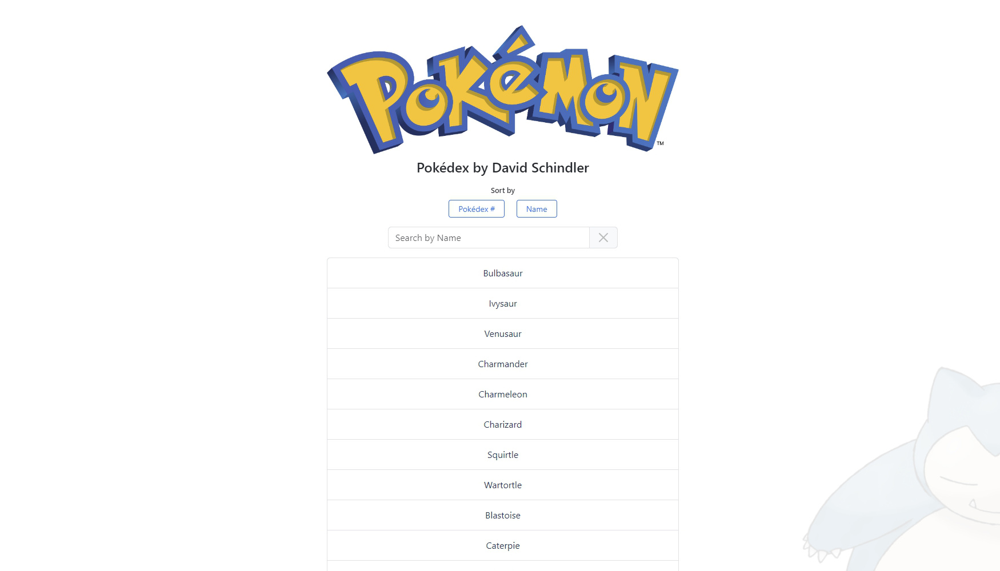
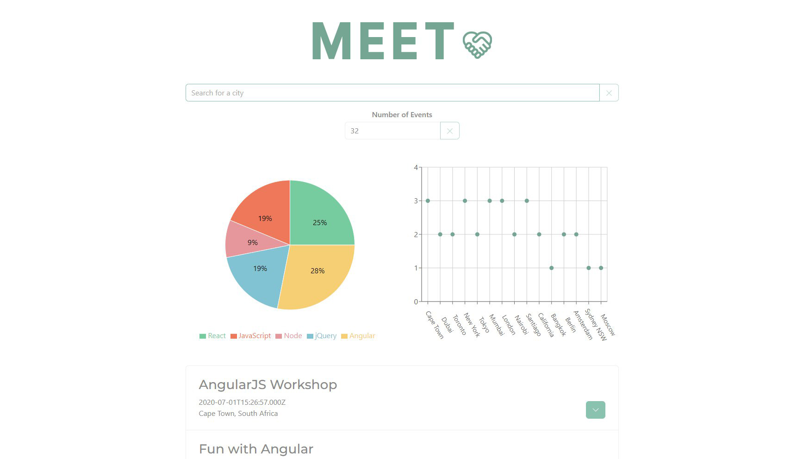
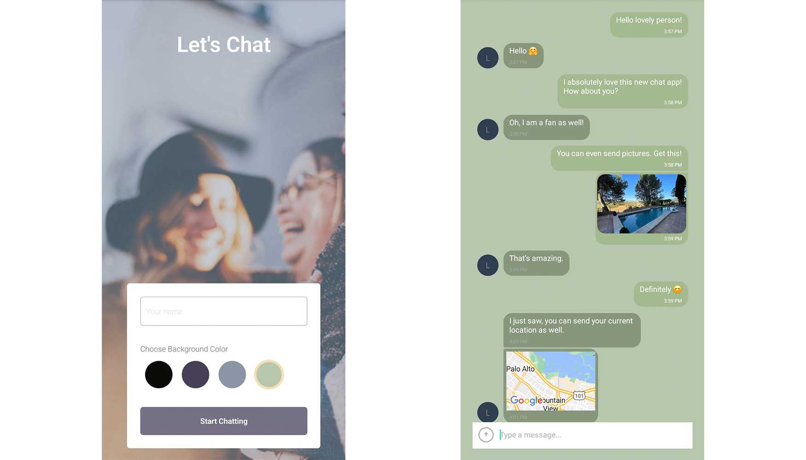
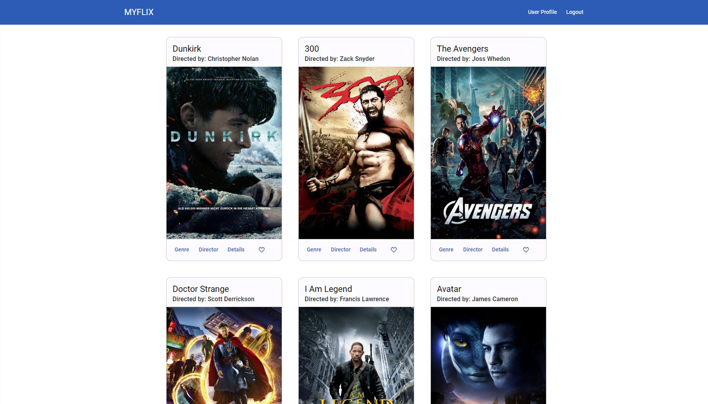

my work
To Do List

The "To Do List App" was designed to help users efficiently manage their daily tasks. It provides a simple and intuitive interface for adding, deleting, and marking tasks as completed.
Technologies used: HTML5, CSS, JavaScript, jQuery, jQuery UI, Bootstrap, Bootswatch
Pókedex
The "Pokédex App" is a JavaScript web application that allows users to browse a database of Pokémon. It loads data from the external Pokémon API and displays details about each Pokémon in a modal when selected.
Technologies used: HTML, CSS, JavaScript, Bootstrap, external Pokémon API
Movie API

The "Movie API" is the backend for the MyFlix movie database app.
Users can register an account, login and access detailed information about movies, directors, and genres. They can also update their profile, and manage their favorite movies list.
Technologies used: Node.js, Express, MongoDB, Mongoose, REST API, Bootstrap, Bootswatch
MyFlix Client

This React app is the frontend to the MYFLIX API project, providing a dynamic and interactive user interface for accessing movie information.
Built as a single page application, it enhances user experience by allowing responsive interactions and real-time updates without page reloads.
Technologies used: React, React Router, Redux (reduxjs/toolkit), Bootstrap.
Meet
This PWA, built via TTD, enables user to login via OAuth2.0 using their Google account to access a list of events. The list can be filtered by location (city) and the number of events to display.
It utilizes serverless functions (AWS lambda) for obtaining the access token from the authorization server and for fetching the list of events from the Google calendar API.
Techonoglies used: React, React-bootstrap, Rechart, OAuth2.0, serverless functions, AWS Lambda
Chat-App
A chat app for mobile devices enabling users to send and receive text messages, pictures and their current location. It runs on Android and Apple devices.
Techonoglies used: React Native, React Navigation, Expo (ImagePicker, MediaLibrary, Location), Google Firestore, Gifted Chat Library, AsyncStorage, react-native-maps
MyFlix Client Angular
This app is a second frontend to the MYFLIX API project, again providing a dynamic and interactive user interface for accessing movie information.
Built as a single page application, it enhances user experience by allowing responsive interactions and real-time updates without page reloads.
Technologies used: Angular, Angular Material, Typedoc